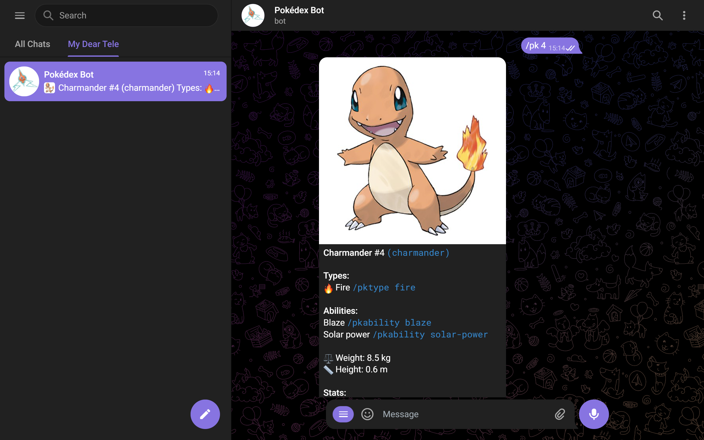

A pokédex bot you can use on Telegram to get information about pokémons.

Pokédex Bot for Telegram can show you the list of all pokémon and give you the picture and description of that pokémon in return for you to enter the ID or name of the pokémon you requested.
You can view the list of Pokemon with /pklist (supported from #1-Bulbasaur to #898-Calyrex), and you can view the properties of a type/ability of your choice with /pktype and /pkability commands. You can also obtain a list of pokémons that are suitable for a type you choose. (For example, you can get a list of all fire-type Pokémon.)
telegraf.js (JavaScript Telegram Bot Framework) is used for the bot. The data is pulled from PokéAPI. The bot is hosted on Heroku.
For a while, I was interested in creating bots on Telegram and I made a bot using ManyBot, I also liked using RoseBot's features. The idea for a bot that displays Pokémon information belonged to my cousin. I was aware that adding these features one by one using services like ManyBot would be troublesome, so I thought it made sense to make a bot by coding and pulling data from somewhere instead. (See technology stack)
When I wrote this bot, I was still in the process of learning JavaScript. I can rewrite the project in a cleaner way and to cover and use the various features of the API in more detail. Although I haven't decided yet, I may try using TypeScript this time.
The activities of this bot will be stopped by the beginning of 2025 at the latest. Here's why: Telegra.ph link (opens in new tab)
I first tried to make this Telegram bot in 2021. The reason I did this was because I was a coder, my cousin's dream of a Telegram bot related to Pokémon, and my interest in Telegram bots at the time. Although I had never watched Pokémon in real life, I created this bot because of my interest in coding and especially easy-to-use REST APIs. In this way, both my cousin, my brother, and I could use the bot, and others could also benefit from it.
After writing the bot with Telegraf.js (v3), I first deployed it to Amazon AWS, and later to Heroku (due to easy GitHub integration and some other reasons). At that time, Heroku was free to a certain extent and was more preferred at that time. But this didn't last long, after using my rights due to being a university student, I started paying 5 USD per month, however, I do not earn money through this bot or try to collect & log personal data of those who use the bot (except for November 2024 for the logging part, read the next paragraph to learn why).
By the end of 2024, we really rarely use Telegram among ourselves compared to the past, and naturally we do not use the bot. In order to find an answer to the question of whether others are still using this bot, I temporarily (only November 2024) added log information about who used the bot and what commands they entered, but I saw that no one was using it.
New features had come to both the Telegram Bot API and Telegraf.js. I, on the other hand, lost interest in Telegram bots and focused entirely on web development and mobile development. After a long time, of course, I could have re-read the documentation and re-written the bot and chosen a preferable PaaS, but when we put all the pieces I mentioned above together, I decided that this was an unnecessary effort.
Due to all this, all activities of Pokédex Bot will be stopped as of 2025 at the latest. If there is really interest in this bot or if there is such a need one day, I may consider re-developing this bot and restarting its activities, but this will probably not happen.